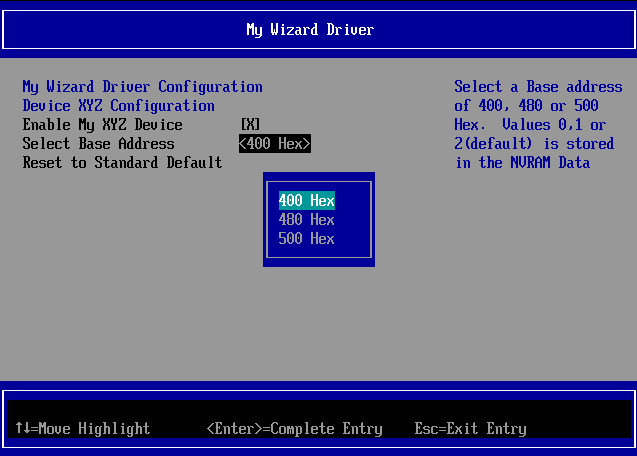
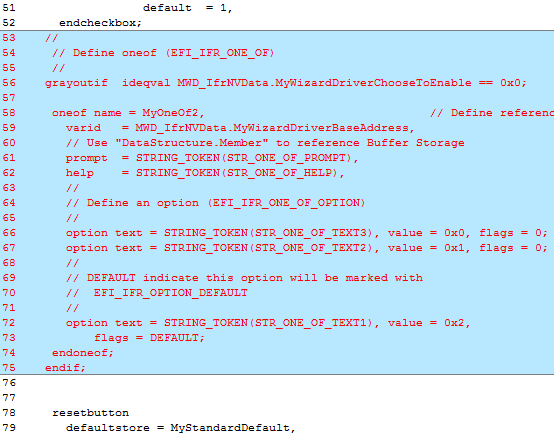
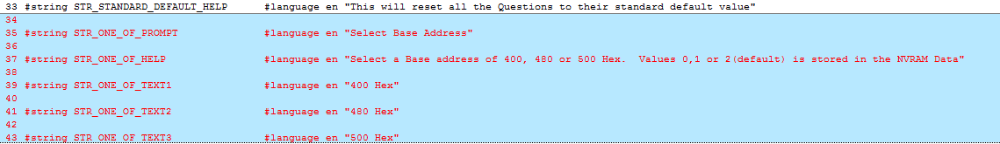
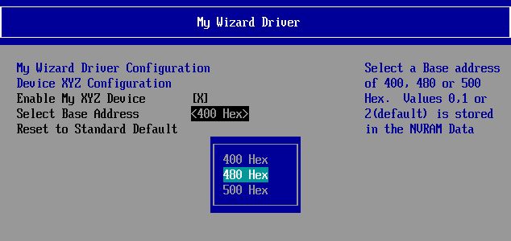
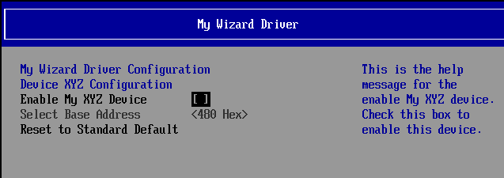
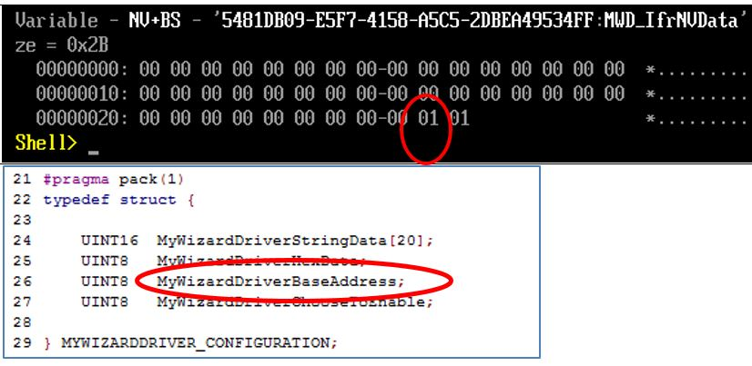

Lab 5. Updating the Menu: Pop-up Box
In this lab, you’ll learn how to add a pop-up box to your driver’s form menu by using the “oneof” VFR term. We will also only update the MyWizardDriver.vfr and MyWizardDriver.uni files. 
Figure 5 My Wizard Driver with a pop-up box
Background Information The VFR term “oneof” will declare a pop-up menu. The user then selects one field that will dictate the value stored in the NVRAM variable. Looking at Figure 5 above, there are three values:
| Value | Display | String token |
|---|---|---|
| 0 | 500 Hex | STR_ONE_OF_TEXT3 |
| 1 | 480 Hex | STR_ONE_OF_TEXT2 |
| 2 | 400 Hex | STR_ONE_OF_TEXT1 |
For this lab you will add code to give your driver menu a pop-up menu item by defining a “oneof” item. Also, if the device is “disabled”, then use the VFR term “grayoutif” statement so that the pop-up menu is not accessible and cannot be changed. The browser engine will use the configuration variable MWD_IfrNVData.MyWizardDriverChooseToEnable with a value of 0x0 to determine if the device is enabled or disabled
- Update the MyWizardDriver.vfr file
Add the following code before the “
resetbutton” statement (approximately line 53)// Begin code // // Define oneof (EFI_IFR_ONE_OF) // grayoutif ideqval MWD_IfrNVData.MyWizardDriverChooseToEnable == 0x0; oneof name = MyOneOf2, // Define reference name for Question varid = MWD_IfrNVData.MyWizardDriverBaseAddress, // Use "DataStructure.Member" to reference Buffer Storage prompt = STRING_TOKEN(STR_ONE_OF_PROMPT), help = STRING_TOKEN(STR_ONE_OF_HELP), // // Define an option (EFI_IFR_ONE_OF_OPTION) // option text = STRING_TOKEN(STR_ONE_OF_TEXT3), value = 0x0, flags = 0; option text = STRING_TOKEN(STR_ONE_OF_TEXT2), value = 0x1, flags = 0; // // DEFAULT indicate this option will be marked with // EFI_IFR_OPTION_DEFAULT // option text = STRING_TOKEN(STR_ONE_OF_TEXT1), value = 0x2, flags = DEFAULT; endoneof; endif; // end code
- Save the MyWizardDriver.vfr file
- Update the MyWizardDriver.uni file
- Add the following code to the end of the file (as shown below):
// begin code
#string STR_ONE_OF_PROMPT #language en "Select Base Address"
#string STR_ONE_OF_HELP #language en "Select a Base address of 400, 480 or 500 Hex. Values 0,1 or 2(default) is stored in the NVRAM Data"
#string STR_ONE_OF_TEXT1 #language en "400 Hex"
#string STR_ONE_OF_TEXT2 #language en "480 Hex"
#string STR_ONE_OF_TEXT3 #language en "500 Hex"
// end code

6). Save MyWizardDriver.uni
Build and test MyWizardDriver
- Open the Visual Studio Command Prompt
- Type build
- Type build run
- At the UEFI Shell prompt,type exit

- Now at the setup front page menu, select “Device Manager”
- Inside the Device Manager menu press the down arrow to “My Wizard Driver Sample Formset” Press "Enter"
- Down Arrow to “Select Base Address”

Notice the Pop up menu - Select “480 Hex” then press "Enter"
Observe: the “Configuration changed” message at the bottom  - Test the “
grayoutif” by selecting “Enable My XYZ Device” then press the “Space” bar to toggle off or “Disabled”.
Notice the “Select Base Address” is now grayed out and not Selectable.  - Press “Space” again to Enable
- To Exit Press “Escape” then “Y” or “F10” then “Escape”
- To Exit the “Device Manager” Page: Press “Escape”
- Press Up Arrow to “Continue”
- At the Shell Prompt type: "
dmpstore -all"  - Observe file MyWizardDriverNVDataStruc.h and the NVRAM
MWD_IfrNVDatavariable.
By updating MyWizardDriverNVDataStruc.h, our data structure stored in NVRAM is namedMWD_IfrNVDataof typeMYWIZARDDRIVER_CONFIGURATION.
Notice that the base address byte is the next to the last byte in the data structureMWD_IfrNVData.MyWizardDriverBaseAddresswhere02 == 400H,01 == 480H, and00 == 500H
Notice the NVRAM Variable with the value of480Hwill have a true value of01. - Type “reset” **at the Shell prompt
- Press “Enter” to return to the Visual Studio Command Prompt

For any build issues copy the solution files from C:\Fw\LabSolutions\LessonE.5
NOTE: Del Directory C:\fw\edk2\Build\NT32IA32\DEBUG_VS2010x86\IA32\MyWizardDriver before the Build command to build the MyWizardDriver Clean.